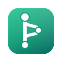

Commit Builder for Git support
Clean Conventional Commits messages: pick a type, check the rules as you type, then copy or fill the merge box.
Install
Add it from Microsoft Edge Add-ons, then keep it in the toolbar: click the Extensions (puzzle-piece) icon in the toolbar and the eye icon (“Show in toolbar”) next to Commit Builder for Git.
Pro
- Buy: open Commit Builder for Git's settings (right-click its icon → Options) and click Buy Pro. It's $9.99 once, not a subscription.
- Get Pro: click PRO at the top of Commit Builder (or Settings › PRO), click Buy Pro, then paste the license key from your Gumroad receipt into the Pro box and click Activate. Your browser asks once to let Commit Builder reach Gumroad to check the key. One key works on up to 3 of your browsers.
- Activate: paste the license key from your purchase email into the settings and click Activate. Microsoft Edge asks once to let Commit Builder for Git reach the license server.
- Another computer: a key works on up to 3 of your browsers. Entering it again on a browser where it was already activated doesn't use another one. Need a 4th? Email help@fitztoppicks.com with your Gumroad receipt and we'll free a place.
- Lost your key: search your email for "Gumroad", or find the purchase in your Gumroad library (gumroad.com/library) if you have a Gumroad account.
- Refunds: within 14 days of buying, email help@fitztoppicks.com with your order number.
Something not working?
Email help@fitztoppicks.com with what you tried, the page you were on (if you're comfortable sharing it) and your Microsoft Edge version (edge://version).